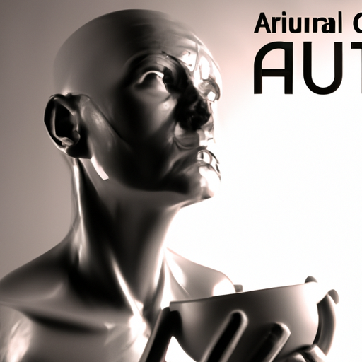

Future of AI and human2
The field of Artificial Intelligence (AI) has grown exponentially over the past few decades. From the development of automated machines to the creation of self-learning algorithms, the possibilities of this technology have expanded rapidly. AI has had a profound impact on the world, changing the way businesses operate and creating new opportunities for professionals across all industries. But what does the future of AI hold for humanity?
AI has come a long way since its early days. Machines that were once able to merely follow simple commands now have the capability to think on their own and make decisions without human intervention. AI technologies like machine learning and deep learning are now being used to automate processes and enable computers to "learn" from data. This technology has been used in areas such as image recognition, natural language processing, and robotics.
But how will AI affect humanity in the future? Over the next 500 years, AI will continue to evolve and become even more sophisticated. We can expect AI to reach levels of intelligence that surpass that of humans, and continue to develop techniques that can solve complex problems and provide solutions that can benefit humanity. AI could even be used to create self-replicating robots that can automate mundane tasks and reduce the need for human labor.
In addition, AI could help to improve healthcare and the quality of life of many people around the world. AI-powered systems could be used to diagnose diseases more accurately, and medical robots could be developed to perform delicate surgeries and provide personalized treatments to patients. AI could also be used to improve the human-computer interface, creating more intuitive and efficient ways for humans to interact with machines.
The possibilities for AI in the future are endless. As AI continues to evolve and become smarter and more powerful, it will be up to us to ensure it is used for the advancement of humanity rather than its destruction. With careful planning and responsible use, AI can be a force for good and help improve the lives of everyone on the planet.